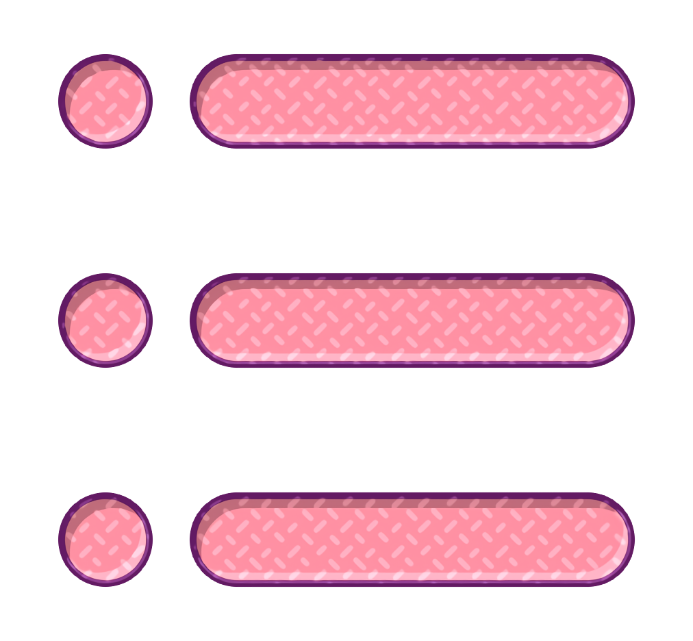
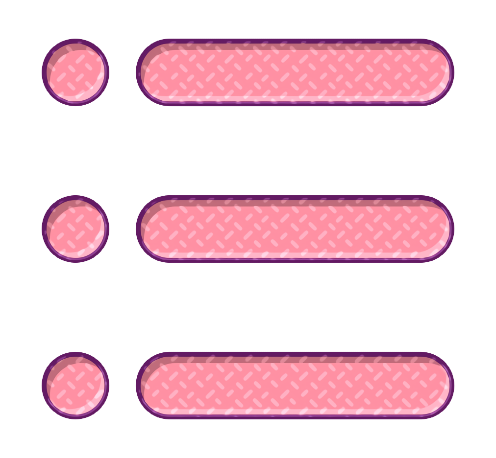

Grilled Ratatouille Pasta Salad
Yield: 4 servings
Active Time: 25 minutes
Total Time: 40 minutes
Ingredients
2 medium zucchini (about 1 1/2 lb.), halved lengthwise
1 medium or 2 small eggplants (about 1 lb.), cut into 1" wedges
3/4 cup extra-virgin olive oil, divided
2 1/2 tsp. kosher salt, divided
1 tsp. freshly ground black pepper, divided
10 oz. penne or casarecce pasta
1 large or 2 medium heirloom or beefsteak tomato (about 1 lb.), cut into 1" pieces
8 oz. Ciliegini (mini fresh mozzarella balls), drained, halved
2 Tbsp. white balsamic or white wine vinegar
1 Tbsp. thyme leaves
1 cup basil leaves
Preperation
1. Bring a medium pot of salted water to a boil, cook pasta according to package instructions. Drain the pasta and rinse with cold water. Set aside.
2. Heat a grill to medium-high heat. Lightly brush vegetables with olive oil and season with salt and pepper. Place the vegetables and garlic cloves on a grill pan or in a grill basket. Grill until vegetables are browned and tender. Remove from heat and let cool to room temperature. Finely chop the garlic cloves.
3. Add grilled vegetables and garlic to the cooked pasta. Drizzle with olive oil and balsamic vinegar. Stir and season with salt and pepper, to taste. Sprinkle with basil. Serve at room temperature or chilled.